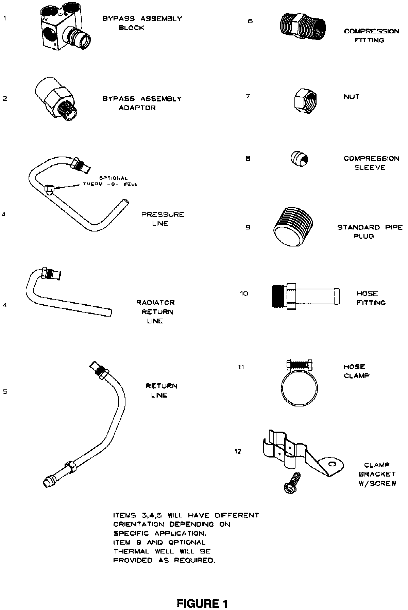

A/T - Overdrive Unavailable in Cold Temperatures: Overview
NO: 21-06-97 Rev. AGROUP: Transmission
DATE: Dec. 19, 1997
SUBJECT:
Overdrive Unavailable in Extreme Cold Temperatures, Bypass Kit Installation, Inhibitor Programming
THIS BULLETIN SUPERSEDES TECHNICAL SERVICE BULLETIN 21-06-97, DATED MAR. 21, 1997 WHICH SHOULD BE REMOVED FROM YOUR FILES. ALL REVISIONS ARE MARKED WITH **ASTERISKS** AND INCLUDE MODEL CHANGES AND PART NUMBER ADDITIONS FOR V-10 APPLICATIONS.
MODELS:
1996 - **1998** (AB) Ram Van/Wagon
1996 (AN) Dakota
1996 - **1998** (BRIBE) Ram Truck
1996 - **1998** (ZJ) Grand Cherokee
NOTE:
THIS BULLETIN APPLIES TO VEHICLES EQUIPPED WITH GASOLINE ENGINES AND A 42RE, 44RE, 46RE, OR 47RE TRANSMISSION.
SYMPTOM/CONDITION:
At ambient temperatures of -20 C (-5 F) or below, the Powertrain Control Module (PCM) will electronically inhibit the transmission from shifting into overdrive. This will protect the transmission from damage if the transmission fluid begins to freeze. In extreme cold climatic regions, this feature can cause customer dissatisfaction due to elimination of overdrive and less than optimal fuel economy.
DIAGNOSIS:
The cold weather by-pass kit along with disabling the inhibitor feature should only be incorporated for vehicles used in areas of extended cold ambient temperatures.
NOTE:
THIS KIT WILL DECREASE THE MAXIMUM COOLING CAPACITY OF THE TRANSMISSION'S COOLING SYSTEM. AS A RESULT, IT IS NOT RECOMMENDED THAT THIS BULLETIN BE PERFORMED UNLESS THE ABOVE STATED CONDITION EXISTS. ALSO, IF THE VEHICLE IS USED FOR MODERATE TO HEAVY TOWING IT IS NOT RECOMMENDED.

PARTS/EQUIPMENT REQUIRED:
**1 04798668 Kit, By-Pass V-10 Applications**
1 04874284 Kit, Universal By-Pass (See Figure 1 for kit contents)
AR(1) 04318044 Thread Sealant
1 CH6000 Scan Tool (DRB III)
1 CH7035 General Purpose Interface Bus Cable (GPIB)
1 CH7000/7001 J1962 Cable
1 04669020 Label - Authorized Software Update
1 04275086 Label - Authorized Modification
NOTE:
THE MDS AND DRB III ARE ALSO REQUIRED TO PERFORM PART OF THIS REPAIR AND THE SYSTEM MUST BE OPERATING WITH RELEASE 21 OR HIGHER AND TIL CD RELEASE 1146 OR HIGHER MUST BE INSTALLED.